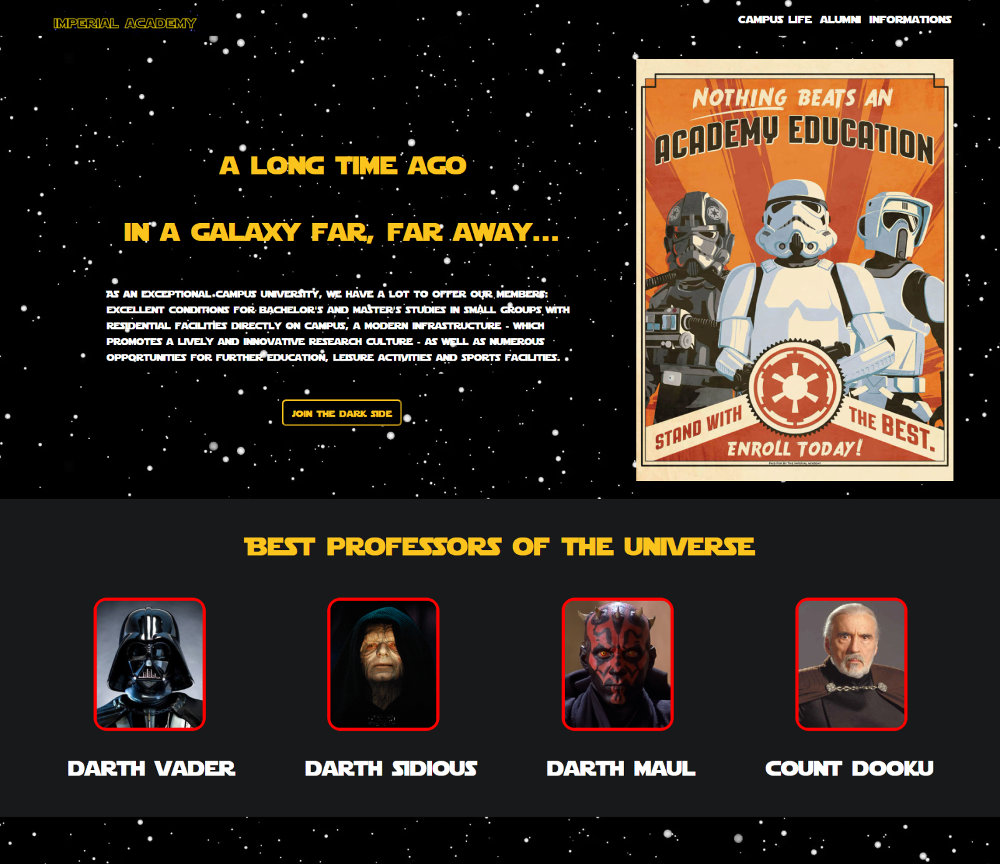
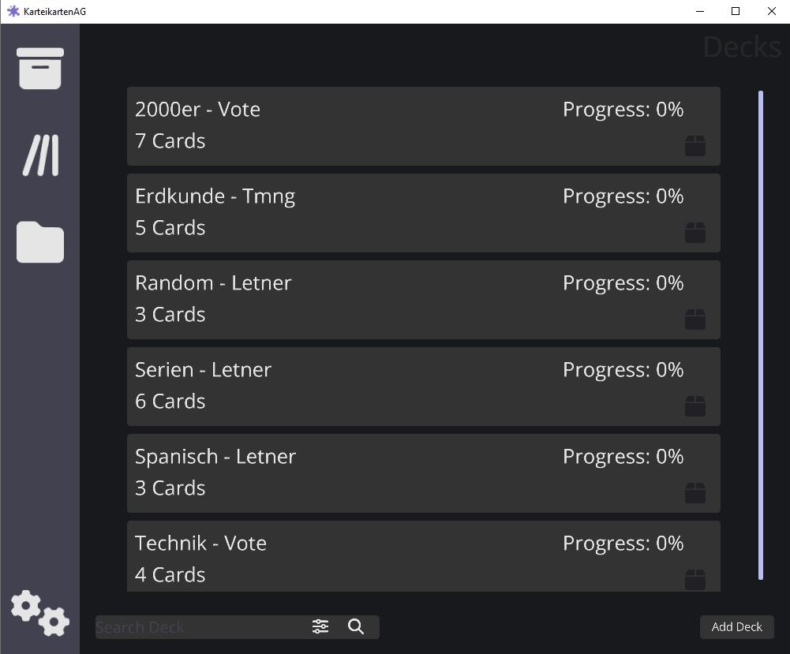

Merhaba! Sorunları çözmeyi ve bir şeyler inşa etmeyi severim.
Türkiye genelinde Lise Yerleştirme Sınavı'nda ilk yüzde 1'lik dilime girdikten sonra, yeni zorluklar üstlenmeye motive oldum. Teknoloji ve inovasyon alanındaki birçok fırsatıyla çekici olduğundan üniversite eğitimim için Almanya'yı seçtim. Şu anda Bremen Üniversitesi'nde bilgisayar bilimi okuyorum ve gelecek yıl lisans tezimi yazacağım. Programlama konusundaki ilgim artmaya devam ediyor ve pratik deneyim yoluyla becerilerimi geliştirmeyi dört gözle bekliyorum.
Öğrenme yolculuğum ilerlemeye devam ediyor ve JavaScript, Angular, ve React gibi modern teknolojilerle aktif olarak çalışıyorum.


-
Digital Twin
GovTech kursundaki veri bilimi projemiz için dijital bir ikiz oluşturdum ve rüzgar türbinlerinin öngörülü bakımı için farklı makine öğrenimi algoritmaları uyguladım. 3 kişilik geliştirme ekibinin bir üyesiydim. Python, ML algoritmaları, Javascript kütüphaneleri ve React gibi birçok yeni teknolojiyi öğrendik.
-

Landing Page
Odin Project Web Geliştirme kursunda yaptığım projelerden biri. Flexbox, HTML ve CSS becerilerimi geliştirdim.
-

KarteiKartenAG
Yazılım projemiz için geliştirdiğimiz Anki benzeri bir uygulama. 5 kişilik geliştirme ekibinden biriydim. Proje sırasında Java, Git, SQL ve Hibernate becerilerimi geliştirme, bir veritabanı oluşturma, bir web sunucusu ve yerel depolama oluşturma olanağına sahip oldum. A+ aldık.
-

Tab Saver
Scrimba kursunda yaptığım projelerden biri bir Chrome eklentisi oluşturmaktı. Bu projeyi kodlamak için Javascript, HTML ve CSS kullandım ve eventListeners, template strings, local storage, JSON.parse() ve JSON.stringify() ile pratik yaptım.